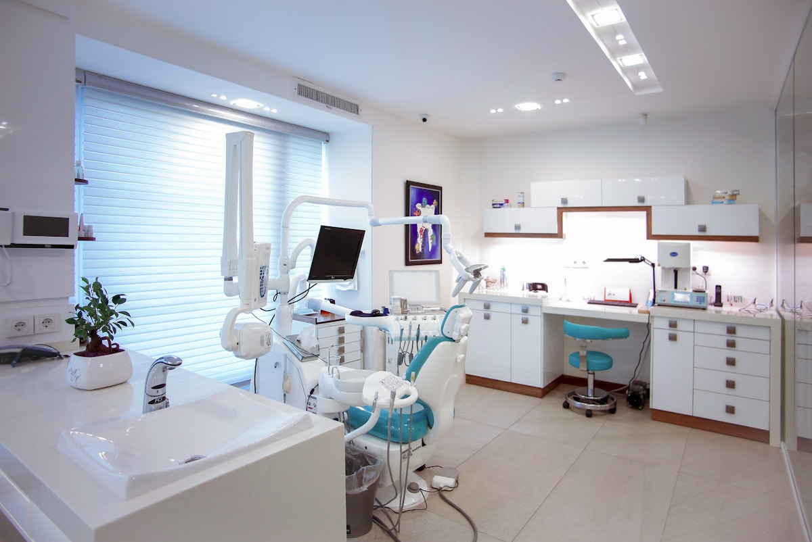

Reimagining dentistry as a rejuvenating retreat. Handcrafted microscopic feldspathic veneers, warm acoustic oak slats, zero medical odor, and twilight sedation designed for complete sensory serenity.

Designed with sound-absorbing Danish oak acoustic battens, noise-canceling Bose spatial audio, and diffuse circadian lighting.
Every veneer is custom-milled from German IPS e.max lithium disilicate blocks to match your natural facial symmetry:
Milled to an ultra-thin 0.25mm thickness requiring zero enamel shaving. Micro-layered with incisal blue opalescence that absorbs and refracts sunlight exactly like natural enamel prism crystals.
Heated organic cotton blankets, warm lavender face compress, and custom-diffused Norwegian pine essential oils completely replace clinical hospital scents.
Administered by board-certified anesthesiologists. Drift into a blissful, dream-like state while comprehensive cosmetic rehabilitation is completed in a single afternoon.
4K OLED ceiling-mounted displays paired with noise-cancelling headphones streaming 8K aerial drone walks over Scandinavian fjords and alpine lakes.
We accept only 4 patient suites per day to dedicate uninterrupted time and clinical focus to your smile.